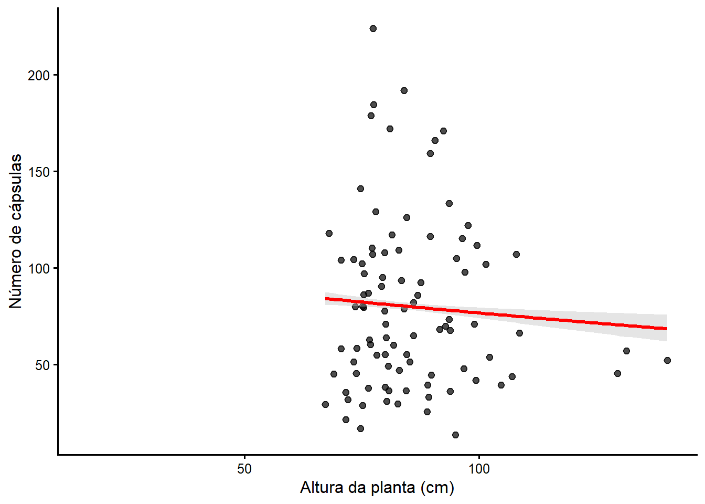
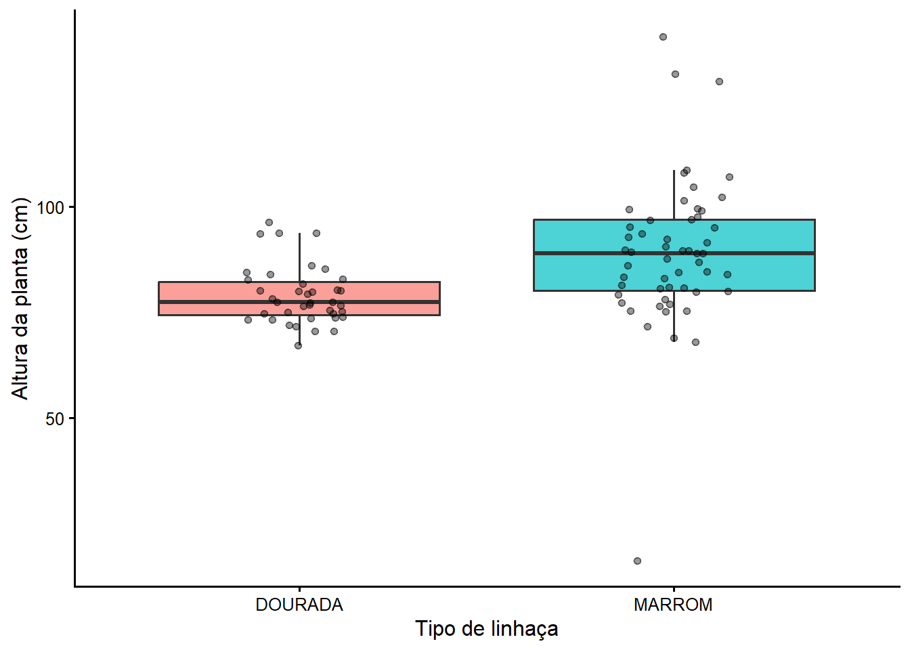
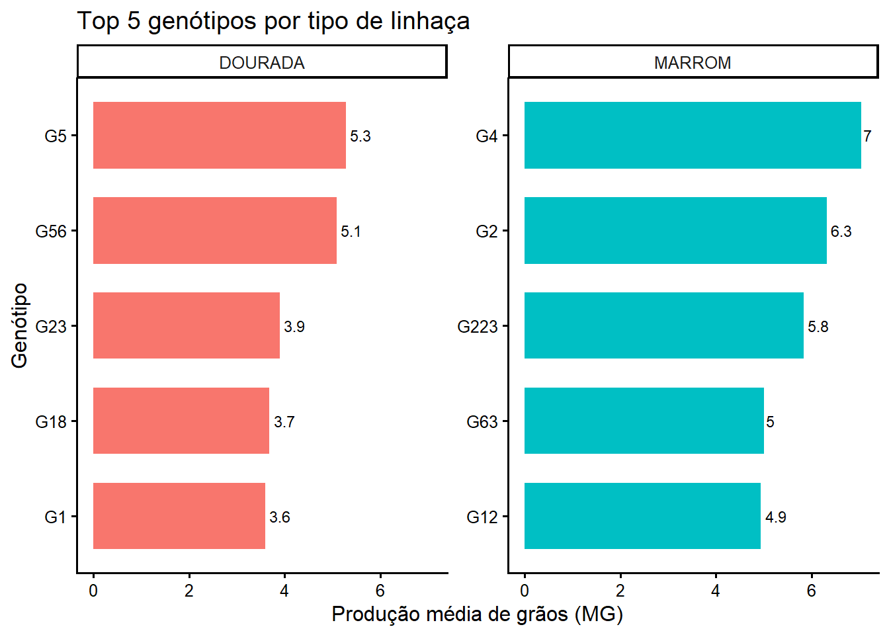
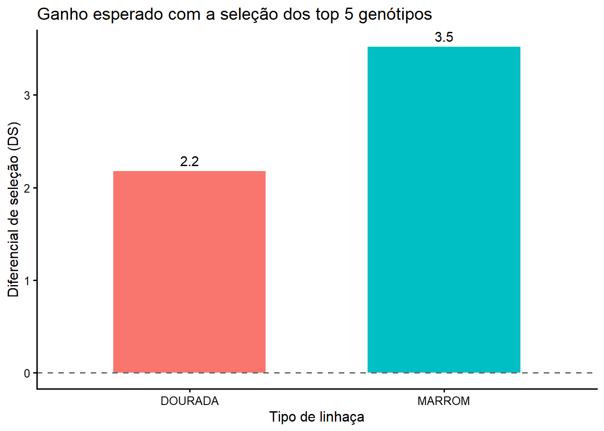

# Códigos usados para carregar os pacotes e importar os dados.
library(rio)
library(tidyverse)
lab <- import("laboratorio.xlsx")
caps <- import("capsulas.xlsx")
graos <- import("graos.csv")
mmg <- import("mmg.xlsx")Solução
Introdução
A seguir encontram-se os scripts construídos para solucionar o desafio:
1. Preparação do ambiente
2. Análise e consolidação por planta
# Processamento de dados do arquivo grãos
graos_resumido <-
graos |>
select(img, length, width) |>
separate_wider_delim(img,
delim = "_",
names = "img",
too_many = "drop") |>
mutate(img = as.numeric(img))
calculos_graos <- graos_resumido |>
group_by(img) |>
summarise(
ng = n(),
cg = mean(length, na.rm = TRUE),
lg = mean(width, na.rm = TRUE),
)
calculos_graos <- calculos_graos |>
mutate(img = as.numeric(img))
# Processamento de dados do arquivo cápsulas
capsulas_resumido <-
caps |>
select(img) |>
separate_wider_delim(img,
delim = "_",
names = "img",
too_many = "drop") |>
mutate(img = as.numeric(img)) |>
group_by(img) |>
summarise(
nc = n()
)
# Unificação de dados
lab <- lab |>
rename_with(tolower) |>
mutate(img = as.numeric(img))
dados_unificados <- lab |>
left_join(calculos_graos, by = "img") |>
left_join(capsulas_resumido, by = "img")3. Análise e consolidação por genótipo
# Agrupação dos dados por genótipo e cálculo da média
genotipo_resumido <- dados_unificados |>
group_by(gen) |>
summarise(
across(ap:nc, .fns = \ (x){mean(x, na.rm = TRUE)})
)
# Unificação com dados de massa de mil grãos.
mmg <- mmg |>
rename_with(tolower)
df_gen <-
left_join(genotipo_resumido, mmg)Joining with `by = join_by(gen)`4. Exploração e visualização
# Gráfico de dispersão (Altura Planta vs Nro. cáspsulas)
ggplot(df_gen, aes(x = ap, y = nc)) +
geom_point(alpha = 0.7, size = 2) +
geom_smooth(method = "glm", method.args = list(family = "poisson"),
se = TRUE, color = "red", fill = "grey") +
labs(x = "Altura da planta (cm)", y = "Número de cápsulas") +
theme_classic(base_size = 12)
mod <- lm(nc ~ ap, data = df_gen)
summary(mod)
Call:
lm(formula = nc ~ ap, data = df_gen)
Residuals:
Min 1Q Median 3Q Max
-65.516 -32.399 -8.608 25.718 142.265
Coefficients:
Estimate Std. Error t value Pr(>|t|)
(Intercept) 98.766 30.229 3.267 0.00154 **
ap -0.220 0.349 -0.630 0.53002
---
Signif. codes: 0 '***' 0.001 '**' 0.01 '*' 0.05 '.' 0.1 ' ' 1
Residual standard error: 44.07 on 90 degrees of freedom
(28 observations deleted due to missingness)
Multiple R-squared: 0.004396, Adjusted R-squared: -0.006666
F-statistic: 0.3974 on 1 and 90 DF, p-value: 0.53# Boxplot (Altura da planta e tipo de linhaça)
ggplot(df_gen,
aes(x = tipo, y = ap, fill = tipo)) +
geom_boxplot(alpha = 0.7, outlier.shape = NA) +
geom_jitter(width = 0.15,
alpha = 0.4,
size = 1.5) +
labs(x = "Tipo de linhaça", y = "Altura da planta (cm)") +
theme_classic(base_size = 12) +
theme(legend.position = "none")
# Top 5 genótipos
top5 <- df_gen |>
group_by(tipo, gen) |>
summarise(mg_media = mean(mg, na.rm = TRUE),
.groups = "drop") |>
group_by(tipo) |>
slice_max(mg_media, n = 5) |>
arrange(tipo, desc(mg_media))
# Gráfico dos top 5 por tipo de linhaça
top5 |>
mutate(gen = reorder(gen, mg_media)) |>
ggplot(aes(x = gen, y = mg_media, fill = tipo)) +
geom_col(width = 0.7) +
geom_text(aes(label = round(mg_media, 1)), hjust = -0.2, size = 3) +
coord_flip() +
facet_wrap(~ tipo, scales = "free_y") +
labs(x = "Genótipo", y = "Produção média de grãos (MG)",
title = "Top 5 genótipos por tipo de linhaça") +
theme_classic(base_size = 12) +
theme(legend.position = "none")
# Diferencial de seleção
media_geral <- df_gen |>
group_by(tipo) |>
summarise(
mg_geral = mean(mg, na.rm = TRUE),
.groups = "drop")
media_top5 <- top5 |>
group_by(tipo) |>
summarise(
mg_top5 = mean(mg_media, na.rm = TRUE),
.groups = "drop")
diferencial <-
media_geral |>
left_join(media_top5, by = "tipo") |>
mutate(DS = mg_top5 - mg_geral)
diferencial |>
ggplot(aes(x = tipo, y = DS, fill = tipo)) +
geom_col(width = 0.6) +
geom_text(aes(label = round(DS, 1), vjust = ifelse(DS >= 0, -0.5, 1.2)), size = 4) +
geom_hline(yintercept = 0, linetype = "dashed", color = "grey40") +
labs(x = "Tipo de linhaça", y = "Diferencial de seleção (DS)",
title = "Ganho esperado com a seleção dos top 5 genótipos") +
theme_classic(base_size = 12) +
theme(legend.position = "none")
Resultados
Relação entre altura da planta e número de cápsulas
O gráfico mostra uma leve tendencia negativa entre a altura da planta e o número de capsulas. Entretanto, a faixa de confiança é ampla, o que indica baixa precisão e alta incerteza. Além disso os dados apresentam grande dispersão, sem formar um padrão claro.
Diferença de altura entre os tipos de linhaça
Os dados demostram indícios de diferenças de altura das plantas segundo o tipo de linhaça. O boxplot mostra uma diferença clara entre as medianas de cada tipo de linhaça e a distribuição das alturas, sendo as plantas do tipo Marrom as que se mostraram maiores.
Top 5 de genótipos
- DOURADA: G1 (3.6), G18 (3.7), G23 (3.9), G56 (5.1), G5 (5.3).
- MARROM: G12 (4.9), G63 (5.0), G223 (5.8), G2 (6.3), G4 (7.0).
Diferencial de seleção para cada tipo de linhaça
Os dados mostram que o top 5 de plantas de cada tipo de linhaça apresentam medias de produção de grão maior com relação à média geral da população. Esse diferencial positivo, demostra o potencial desses cinco genótipos para o melhoramento da produtividade das plantas. A linhaça DOURADA apresentou ganho esperado é de +2.2 unidades de produção enquanto para o tipo MARROM, o ganho esperado é de +3.5 unidades de produção.
Conclusões
- Não há uma relação linear clara entre a altura da planta e o número de cápsulas.
- As plantas do tipo Marrom mostraram-se significativamente mais altas que as do tipo Dourada.
- Ao comparar os 5 de genótipos com maior produção de grãos para cada tipo de linhaça observou-se que os genótipos de tipo Marrom têm uma produção média maior que os do tipo dourada.
- O diferencial de seleção (DS) foi positivo para ambos os tipos de linhaça
(Para o avanço do programa de melhoramento genético da linhaça recomenda-se selecionar os genótipos G4, G2, G223, G63 e G12 (para o tipo MARROM) e G5, G56, G23, G18 e G1 (para o tipo DOURADA), visto que apresentam as melhores características agronômicas gerando maior produção de grãos.)